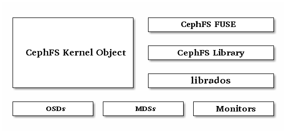

Ceph 文件系统¶
Ceph 文件系统（ Ceph FS ）是个 POSIX 兼容的文件系统，它使用 Ceph 存储集群来存储数据。 Ceph 文件系统与 Ceph 块设备、同时提供 S3 和 Swift API 的 Ceph 对象存储、或者原生库（ librados ）一样，都使用着相同的 Ceph 存储集群系统。
Important
当前， CephFS 还缺乏健壮得像 ‘fsck’ 这样的检查和修复功能。存储重要数据时需小心使用，因为灾难恢复工具还没开发完。更多的 CephFS 使用现状见 CephFS 尝鲜 。

Ceph 文件系统要求 Ceph 存储集群内至少有一个 Ceph 元数据服务器。
步骤一：元数据服务器要运行 Ceph 文件系统，你必须先装起至少带一个 Ceph 元数据服务器的 Ceph 存储集群。 | 步骤二：挂载 CephFS一旦有了健康的 Ceph 存储集群，及其配套的元数据服务器，你就可以创建并挂载自己的 Ceph 文件系统了。首先确认下你的客户端的网络连通性和认证密钥。 | 其它详细信息 |